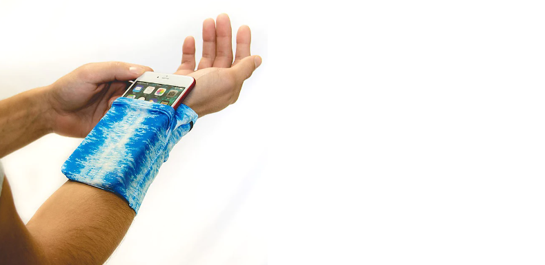

DIY Corner
Placeholder for some instructions on how to repair holey socks and how to create new stuff out of old socks
1 / 3

Darn Holey Socks
- Prepare what you need: A holey sock, a needle, a thread in the color of the sock, a darning egg or a similar object.
- Thread the needle with one or two strands of thread, depending on the weigth of the sock.
- Pull the sock over the darning egg and trim away any ragged edges from the sock fabric.
- Support the fabric around the hole with basic sewing stitches.
- Run the thread up and down the hole until the hole is blocked with parallel stitches.
- Sew stitches perpendicular to the parallel stitches.
- Be happy with your unholey sock.
2 / 3
Sock Puppets
- Prepare what you need: A sock, a needle, a thread, 2 buttons or googley eyes and optionally some felt and/or wool rests.
- Try the sock on and see how it fits to become a puppet.
- Attach the eyes to the place where it feels right, either by glueing or sewing them on.
- Glue and/or saw any remaining attachments on. Be creative! You can make all kinds of sock puppets!
- Be happy with your flock of puppets.
3 / 3

Sport Mobile Case
- Prepare what you need: A large sock, a smaller sock, a string, a needle, a thread, your mobile phone for measurements.
- Cut away the toes of the large sock and put it on your upper or lower arm to see where it fits well.
- Put your mobile phone into the smaller sock. It should fit in completely and leave a rim of about 3-5cm.
- Saw the string into the rim of the smaller sock to be able to close it, that your mobile doesn't fall out.
- Saw the small sock to the big one in the same direction.
- Happy running/biking with your phone attached to you without a pocket!
❮
❯